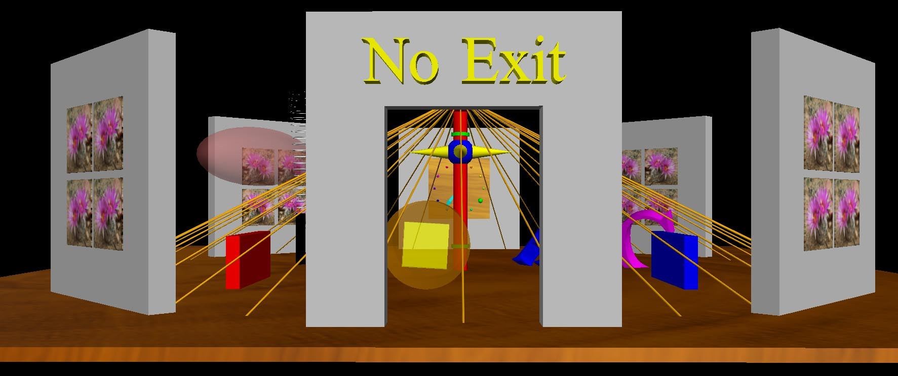

VPython
3D
Programming for Ordinary Mortals |
 |
VPython makes it easy to create navigable 3D displays and animations,
even for those with limited programming experience. Because it is based
on Python, it also has much to offer for experienced programmers and
researchers. Click here to see a variety of examples.
For a quick introduction, see the following YouTube videos, but be aware that for the current VPython 7 version of VPython the name of the module is "vpython", not "visual", and the graphics display is shown in a browser tab rather than in a bare window.
3D Objects (Spanish version Objetos 3D by Javier Carro)
Variable Assignment (Spanish version Asignación de Variables by Javier Carro)
Beginning Loops (Spanish version Comenzando con Bucles by Javier Carro)
Loops and Animation (Spanish version Bucles y Animación by Javier Carro)
Scale Factors (Spanish version Factores de Escala by Javier Carro)
Debugging Syntax Errors
Lists, Part 1
Lists, Part 2
How to get started
using VPython
New to Python and/or VPython? GlowScript
VPython is a good place to start:
· Go to glowscript.org and
create an account.
o You should see the sentence “You are signed in as
<yourusername> and your programs are here."
Click on "here”.
o Click on “Create New Program”. Name it “box”. You will see this line:
Glowscript
2.7 VPython
Add this statement on the next line:
box()
· Then click on “Run this program”. You will see a white box on a
black background.
o Use the right button (or CTRL-drag left button) of the mouse to
rotate the camera to view the scene from different angles.
o To zoom in and out use two buttons, or ALT/OPTION-drag, or the
mouse scrollwheel.
Touch screen: swipe or two-finger rotate; pinch/extend to
zoom.
To pan, shift-drag.
o Click on Help to see what graphical objects are
available. Additional sources of information are provided below.
Experienced Python / VPython user?
Need access to all Python modules? Try VPython 7:
· Install the Continuum Anaconda (or Enthought Canopy) Python
distribution. We recommend choosing Python 3.5 or later, especially if
you already have “Classic” VPython / Python 2.7 installed on your machine. If you are an expert Python user and want to use Jupyter notebooks, you can install the
IPython and Jupyter modules in your current Python installation; see jupyter.org.
· In a Power Shell or Command Prompt (Windows) or Terminal (Mac /
Linux) run this command, which will install VPython 7 for Python 2.7, 3.4, 3.5, or 3.6:
pip
install vpython
Or if using Anaconda, conda install -c vpython vpython
There will be frequent updates to this module. You can get the latest version this way:
pip
install vpython --upgrade
Or if using Anaconda, conda update -c vpython vpython
You can run from IDLE or from the Spyder editor/launcher with Python 3.5 (3.5.3 or greater) or 3.6, but the newest Spyder 3.2 does not support the use of vpython. The Spyder developers are aware of the issue and have offered to address the problem in a later version. Here are the details about the issue, with information on workarounds. A simple option is to install the older Spyder 3.1.4 by executing this in a terminal:
conda install spyder=3.1.4
You can start Spyder by clicking the Spyder icon that is installed with Anaconda, or you can start Spyder from a command prompt by typing "spyder". In Spyder you must go to Run > Configure and specify "Execute in a new dedicated Python console".
If you read or write data files, and you want by default for them to go into the same folder as your Python program, go to Tools > Preferences > Run and choose the "Default working directory" to be "the script directory". You may also wish in Tools > Preferences > Global working directory to specify what directory Spyder first looks in for programs.
Some Mac users have reported that running from Spyder doesn't work. The following workaround, making and invoking a new environment, does work:
conda create -n vpclean -c vpython vpython python=3
source activate vpclean
To use a Jupyter notebook (Python 2.7, 3.4, 3.5, 3.6): There are two ways to start a Jupyter notebook. In a terminal, execute "jupyter notebook". Or (depending on what operating system you're using), doubleclick the icon "Jupyter Notebook" that is shown as one of the Anaconda-related tools. At the right there is a pulldown menu to create a New notebook, and if you choose "VPython" you will get the following import, which if using Python 3 is unnecessary (you can change the notebook type through the menu Kernel > Change kernel):
from
__future__ import division, print_function
If you have a recent release of the Mac operating system, to start the Jupyter notebook you may need to execute this:
jupyter notebook --browser=Chrome
Either with or without a Jupyter notebook, "from vpython import *" also imports all math functions, clock(), random(), and arange(). This simplifies moving programs between GlowScript VPython and VPython 7.
· Write a test program: This short program will display a white box on a black background:
from vpython
import *
box()
Running a VPython program in a Jupyter notebook: Click in the first cell (containing the vpython import statement), then click the run icon, the one that is a rightward-facing triangle touching a vertical line. Currently, to re-run a VPython program you need to click the circular arrow icon to "restart the kernel"
and then click the red-highlighted button, then click in the first cell, then click the run icon.
Some users find it convenient to iinclude in the first cell just these statements:
from vpython import*
scene = canvas()
Then put the rest of the program in later cells. The result is that the 3D display will be shown just under the first cell instead of at the end of the last cell. It also ensures that the vpython module has been fully initialized before continuing. Moreover, you can re-run the program more easily.
· Rotating and zooming the camera is the same as for GlowScript
VPython; see above.
· Documentation: See the GlowScript VPython Help for documentation. The only GlowScript feature not yet implemented is keyboard interactions in a Jupyter notebook, pending an understanding of the relationship to keyboard inputs being processed by the Jupyter notebook.
· Demo programs: There is a suite of demo programs for Jupyter notebooks (zip file) and for use without a Jupyter notebook (zip file).
· Run demo programs remotely: There is a Binder package of some demo programs, which lets you run Jupyter VPython programs even on computers or mobile devices that do not have Python installed. Because the Binder servers are shared among a large number of people, performance can vary a great deal from day to day and from hour to hour.
· Those who DO have Classic VPython installed and want to keep it should instead create a new environment in which to try the new VPython: "conda create -c vpython -n vpython_jup_env vpython python". After creating the new environment you will need to activate it to try out the new VPython.
How GlowScript VPython and VPython 7 differ
from Classic VPython 6
· Vectors must be represented as vector(x,y,z) or vec(x,y,z), not as (x,y,z).
· The name display has been changed to canvas (for
technical reasons).
· The name gdisplay has been changed to graph.
· curve objects and points objects have a new set of methods.
In the VPython Help at glowscript.org is a conversion
program to convert from Classic to GlowScript syntax; It does an imperfect but
useful job of dealing with the main differences.
Plans for future developments
· Here is a description of the plan for future development of
VPython.
The older Classic VPython 6
· Here is documentation on the older VPython 6, which is still available but no longer supported.
Additional sources of information
Documentation: Overview,
tutorials, and detailed documentation
User forum. (Until Feb. 2013, there was a mailing list whose archives may be found at https://sourceforge.net/mailarchive/forum.php?forum_name=visualpython-users. Please do not write to that list; instead post on the User forum.)
VPython on Stack Overflow: A third party question and answer site for users to share about VPython. We do encourage people to post to the User forum, as there is a larger number of knowledgeable users there.
Python web site: The
Python programming language, on which VPython is based
Using tools at trinket.io it is easy to add both editing and execution of GlowScript VPython to your own web pages. Rhett Allain in his physics blog for Wired magazine has shown examples of this.
Jay Wang has posted a gallery of photos and movies of a variety of interesting VPython programs.
A podcast interview with Ruth Chabay and Bruce Sherwood about the history of VPython.
A blog article on A time line for VPython development by Bruce Sherwood.
A poster on the relationship between GlowScript VPython and Jupyter VPython
A technical presentation on the relationship between GlowScript VPython and VPython 7.
Matter & Interactions: Introductory physics using VPython
Some advanced-level textbooks in which VPython is used:
Computational Physics:Problem Solving with Python, Rubin H. Landau, Manuel J. Páez, Cristian Bordeianu (2015)
Computational Physics with Python Mark Newman (2012)
An Introduction to Statistical Mechanics and Thermodynamics Robert H. Swendsen (2012)
Equilibrium Statistical Physics With Computer Simulations in Python Leonard M. Sander (2013)
Soil Physics with Python:
Transport in the Soil-Plant-Atmosphere System
Marco Bittelli, Gaylon S. Campbell, and Fausto Tomei (2015)
Computational
Modeling and Visualization of Physical Systems with Python Jay Wang (2016)
Write to
if you
don't find what you need, or to tell us how you are using VPython.
Romanian translation of this page by Jessica Parker
Estonian translation of this page by Sonja Kulmala
Indonesian translation of this page by Jordan Silaen
Russian translation of this page by Akhmetov Rauan
German translation of this page by André Lungstraß
Spanish translation of this page
Chinese translation of this page by 殷文锋
French translation of this page by Eddie Vigor
Polish translation by Milana Sharapovan of an earlier version of this page
Ukrainian translation of this page
Dutch translation of this page by Kim Schievink
Portuguese translation of this page by ArturWeber
Danish translation of this page by Phillip Egger
Greek translation of this page by Xristos Begopulos
Albanian translation of this page by Vera Hoxha
Czech translation of this page by Arno Hazecamp
Croatian translation of this page by Milica Novak
Hindi translation of this page by Ashwin
Development of VPython
was supported in part by the National Science Foundation
|